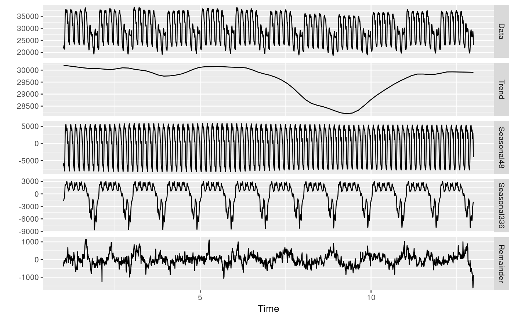
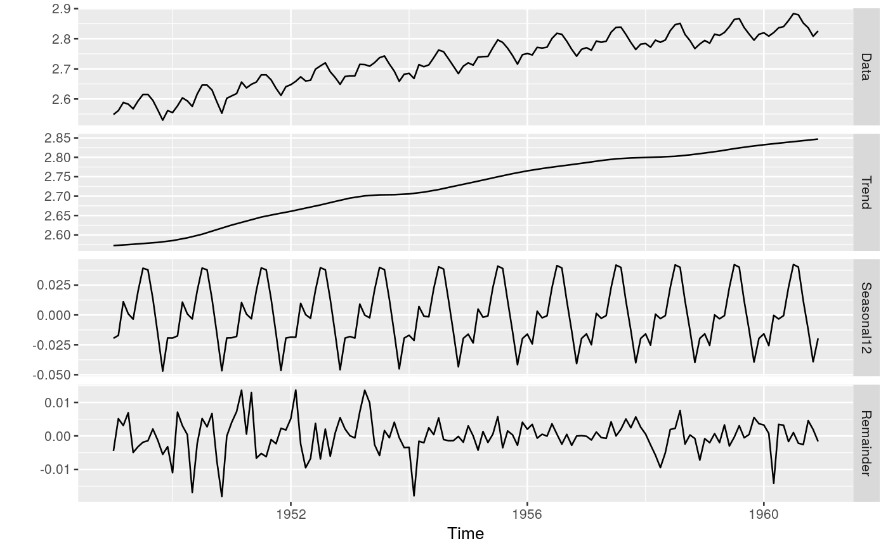

R/mstl.R
Decompose a time series into seasonal, trend and remainder components.
Seasonal components are estimated iteratively using STL. Multiple seasonal periods are
allowed. The trend component is computed for the last iteration of STL.
Non-seasonal time series are decomposed into trend and remainder only.
In this case, supsmu is used to estimate the trend.
Optionally, the time series may be Box-Cox transformed before decomposition.
Unlike stl, mstl is completely automated.
mstl(x, lambda = NULL, iterate = 2, s.window = 13, ...)
| x | Univariate time series of class |
|---|---|
| lambda | Box-Cox transformation parameter. If |
| iterate | Number of iterations to use to refine the seasonal component. |
| s.window | Seasonal windows to be used in the decompositions. If scalar, the same value is used for all seasonal components. Otherwise, it should be a vector of the same length as the number of seasonal components. |
| ... | Other arguments are passed to |
